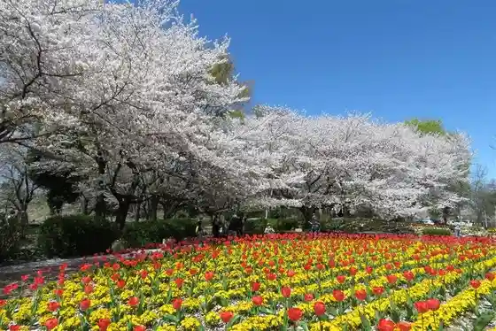
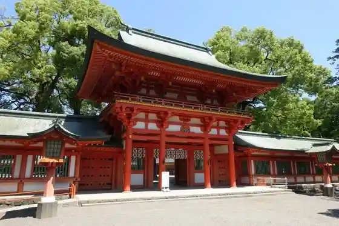
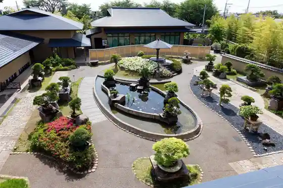

Saitama
Saitama · Saitama
Saitama
Highlighted on the Saitama map.
Sights
Tetsudo Museum
Omiya Hana no Oka Norin Park

Musashi Ichinomiya Hikawa Shrine

Saitama Omiya Bonsai Art Museum

Iwatsuki Castle Park
Gas One Green Park Akigase (Akigase Park)
Saitama Iwatsuki Ningyo Museum
Saitama Prefectural Kindai Art Museum
Omiya Park
Saitama Nigiwai Koryu Kan Iwatsuki